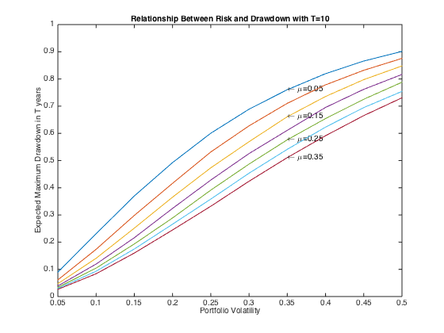

nion
nionDrawdown
Maximum Drawdown & Expected Maximum Drawdown
I want to see what matlab's emaxdrawdown & maxdrawdown function can do. Other portfolio performance metrics provided in matlab includes: portalpha, sharpe, inforatio, lpm, elpm. We will explore those later.
Contents
Maximum Drawdown Basics
Let's Load some example dataset
load FundMarketCash
Assets
TestData
Assets =
'Fund' 'Market' 'Cash'
TestData =
1.0000 1.0000 1.0000
1.0168 1.0067 1.0030
1.0060 0.9822 1.0059
1.0094 0.9725 1.0088
0.9906 0.9116 1.0116
0.9516 0.8380 1.0135
0.9550 0.8540 1.0152
0.9852 0.9195 1.0167
0.9953 0.9276 1.0181
0.9913 0.9140 1.0195
0.9906 0.8964 1.0210
1.0128 0.9301 1.0225
0.9940 0.8737 1.0240
0.9933 0.8673 1.0254
0.9510 0.8055 1.0268
0.8999 0.7427 1.0283
0.9093 0.7476 1.0297
0.8482 0.6664 1.0310
0.8878 0.7250 1.0322
0.9288 0.7677 1.0332
0.9046 0.7226 1.0342
0.8905 0.7036 1.0352
0.8805 0.6931 1.0362
0.8778 0.6998 1.0372
0.9248 0.7575 1.0381
0.9704 0.7974 1.0391
0.9799 0.8076 1.0398
0.9725 0.8218 1.0406
0.9819 0.8378 1.0414
0.9852 0.8289 1.0422
1.0128 0.8758 1.0431
1.0215 0.8835 1.0438
1.0618 0.9299 1.0446
1.0745 0.9469 1.0454
1.0920 0.9601 1.0462
1.0887 0.9456 1.0470
1.0638 0.9308 1.0479
1.0651 0.9435 1.0488
1.0826 0.9619 1.0499
1.0672 0.9300 1.0512
1.0792 0.9338 1.0525
1.0853 0.9439 1.0540
1.0974 0.9583 1.0556
1.1229 0.9971 1.0576
1.1504 1.0310 1.0595
1.1404 1.0059 1.0616
1.1578 1.0271 1.0640
1.1437 1.0089 1.0664
1.1323 0.9897 1.0689
1.1558 1.0212 1.0715
1.1652 1.0226 1.0742
1.1833 1.0607 1.0772
1.1840 1.0510 1.0803
1.1860 1.0595 1.0834
1.1632 1.0419 1.0868
1.1907 1.0813 1.0903
1.1968 1.0816 1.0940
1.2163 1.1103 1.0979
1.2223 1.1133 1.1021
1.2243 1.1271 1.1062
1.2344 1.1416 1.1105
FundMarketCash contains three time series: Fund, Market & Cash. Let's take a look:
plot(TestData); legend(Assets(:));
Let's calculate the return, average return & Stdev of return of the fund:
logReturns = log(TestData(2:end,:) ./ TestData(1:end - 1,:));
% This is same as Tick2ret(TestData);
Mu = mean(logReturns)
Sigma = std(logReturns,1)
T = size(logReturns,1)
Mu =
0.0035 0.0022 0.0017
Sigma =
0.0230 0.0392 0.0009
T =
60
maxdrawdown function provides three form of output: ..simple percentage ..geometric percentage ..absolute amount I can also ask when is the high and low time, during the maximum drawdown episode:
[MaxDD MaxDDIndex] = maxdrawdown(TestData)
MaxDD =
0.1658 0.3381 0
MaxDDIndex =
2 2 NaN
18 18 NaN
MaxDDIndex show us 2nd period is the high, and the drawdown lasted until the 18th period, for Fund & Market. Cash has no drawdown. The high and low for fund was:
TestData(MaxDDIndex(:,1),1)
ans =
1.0168
0.8482
similarly the high and low for the market was:
TestData(MaxDDIndex(:,2),2)
ans =
1.0067
0.6664
maxdrawdown function taking no parameter simply calcuate the drawdown by:
fundhigh = TestData(MaxDDIndex(1,1),1); fundlow = TestData(MaxDDIndex(2,1),1); (fundhigh - fundlow)/fundhigh
ans =
0.1658
this is same as:
maxdrawdown(TestData(:,1))
ans =
0.1658
geometric drawdown calculate log difference of high and low, there is no '50% drop needs 100% rally to make it back' here:
log(fundhigh) - log(fundlow)
ans =
0.1813
which is the same as
maxdrawdown(TestData(:,1),'geometric')
ans =
0.1813
arithmetic drawdown calculate the absoluate amount of drawdown. if you invested 50 in the fund at period 0.
yourmoneyhigh = 50*TestData(MaxDDIndex(1,1),1) yourmoneylow = 50*TestData(MaxDDIndex(2,1),1)
yourmoneyhigh = 50.8395 yourmoneylow = 42.4110
your account drawdown in $ terms is:
yourmoneyhigh - yourmoneylow
ans =
8.4285
which is the same as:
maxdrawdown(50*TestData(:,1),'arithmetic')
ans =
8.4285
Expected Maximum Drawdown
emaxdrawdown function calculate expected maximum drawdown for 1-d brownian motion . Ideal price process follows a geometric brownian motion in other word the return process is brownian motion . By applying Ito's Lemma for , we get: , .
For the fund, the expected maximum drawdown would be:
EMaxDD_fund = emaxdrawdown(Mu(1)-0.5*Sigma(1)^2, Sigma(1), T)
EMaxDD_fund =
0.1588
For the market, the expected maximum drawdown would be:
EMaxDD_market = emaxdrawdown(Mu(2)-0.5*Sigma(2)^2, Sigma(2), T)
EMaxDD_market =
0.3471
Both are reasonable wrt to the realized MaxDD during the period.
what kind of maximum drawdown should we expect when we increase the portfolio volatility?
sigma = 0.05:0.05:0.5; mu = 0.05:0.05:0.35; T=10; k=1; while k<=length(mu) i=1; while i<=length(sigma) emdd(i) = emaxdrawdown(mu(k)-sigma(i)^2/2, sigma(i), T); i=i+1; end emaxddplot = plot(sigma, 1-exp(-emdd)); % add a marker to the chart if mod(k,2) ==1 marker_x = round(2*length(sigma)/3); x = sigma(marker_x); y = 1-exp(-emdd(marker_x)); text(x,y,strcat('\leftarrow \mu= ',num2str(mu(k)))); end hold on; k=k+1; end title('Relationship Between Risk and Drawdown with T=10', 'FontSize', 10); xlabel('Portfolio Volatility', 'FontSize', 10); ylabel('Expected Maximum Drawdown in T years', 'FontSize', 10) hold off;
as we increase the T to 25 years.
sigma = 0.05:0.05:0.5; mu = 0.05:0.05:0.35; T=25; k=1; while k<=length(mu) i=1; while i<=length(sigma) emdd(i) = emaxdrawdown(mu(k)-sigma(i)^2/2, sigma(i), T); i=i+1; end emaxddplot = plot(sigma, 1-exp(-emdd)); % add a marker to the chart if mod(k,2) ==1 marker_x = round(2*length(sigma)/3); x = sigma(marker_x); y = 1-exp(-emdd(marker_x)); text(x,y,strcat('\leftarrow \mu= ',num2str(mu(k)))); end hold on; k=k+1; end title('Relationship Between Risk and Drawdown with T=25', 'FontSize', 10); xlabel('Portfolio Volatility', 'FontSize', 10); ylabel('Expected Maximum Drawdown in T years', 'FontSize', 10) hold off;
For a reasonable portfolio operating in the vacinity of sharpe ratio =1. a maximum drawdown close to 40% should be expected. In term of portfolio, no matter what is the strategy sharpe ratio, venture beyond 25% portfolio volility is dangerous (one should expect > 50% maximum drawdown).